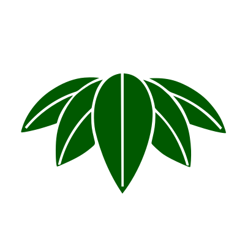

Mon
 I mon (紋?), o monshō (紋章?), mondokoro (紋所?), e kamon (家紋?),
sono gli emblemi giapponesi usati per decorare e identificare un individuo o una famiglia, simili agli stemmi dell'araldica[1] europea.
I mon (紋?), o monshō (紋章?), mondokoro (紋所?), e kamon (家紋?),
sono gli emblemi giapponesi usati per decorare e identificare un individuo o una famiglia, simili agli stemmi dell'araldica[1] europea.
Essi vengono utilizzati inizialmente dai clan di samurai per distinguersi e riconoscersi più facilmente sul campo di battaglia. Si tratta generalmente di disegni stilizzati inseriti all'interno di una forma geometrica. Il loro impiego risale al periodo Kamakura. Durante il Periodo Edo, solo i daimyō avevano il diritto di possederne due. Dall'inizio del periodo Meiji, il loro utilizzo si diffonde anche tra il popolo.
Storia
 I kamon giapponesi – emblemi/stemmi di famiglia – indicavano il lignaggio, la parentela o la posizione sociale di chi li esibiva. Si ritiene siano nati in periodo Nara (710-784) o Heian (794-1185) quando era abitudine applicare esternamente emblemi di famiglia sui carri che trasportavano i nobili. Questi elementi, che si ispiravano ad antichi simboli cinesi, erano altresì utilizzati all'epoca per decorare stoffe e tessuti preziosi delle classe aristocratica, ma non si può parlare ancora ufficialmente di veri e propri stemmi familiari.
Sarà invece a partire dal periodo seguente – periodo Kamakura (1185-1333) e Muromachi-Momoyama (1333-1603) – che armature, bandiere e stendardi militari verranno decorati con kamon sia con lo scopo funzionale di riconoscere alleati e nemici sui campi di battaglia durante gli scontri, ma anche come segno di servizio distintivo. Spesso paragonati ai blasoni della cavalleria europea, in realtà ne differivano molto, dal momento che non avevano il valore di stemmi gentilizi, anche perché nell'antico Giappone – salvo rare eccezioni – non esistevano propriamente i cognomi.
Fu poi a partire dal XVII secolo – periodo Edo[2] (1603-1868) – che i kamon assunsero gradualmente una funzione più decorativa, a detrimento della loro funzione di simbolo autoritario.
Simboli
 Il mon sarebbero nati come modelli cuciti sugli abiti o per distinguere una leadership in uno specifico clan od organizzazione.
Dal XII secolo, fonti danno una chiara indicazione di come furono adottati come distintivi, soprattutto in battaglia.
Si trovavano anche su bandiere ed equipaggiamenti.
Il mon sarebbero nati come modelli cuciti sugli abiti o per distinguere una leadership in uno specifico clan od organizzazione.
Dal XII secolo, fonti danno una chiara indicazione di come furono adottati come distintivi, soprattutto in battaglia.
Si trovavano anche su bandiere ed equipaggiamenti.
Le regole che stabilivano la scelta del mon erano alquanto limitate, sebbene la sua selezione fosse generalmente determinata da norme sociali. Era considerato inappropriato usare un mon che veniva già utilizzato da qualcun altro, e soprattutto offensivo usare un mon già in uso da persone di alto rango. Quando dei mon entravano in conflitto, l e persone di rango inferiore spesso cambiavano il proprio per evitare di provocare l'ira degli appartenenti ai ceti più alti. I mon dei clan più prestigiosi del Giappone, come la malvarosa dei Tokugawa[3] e il crisantemo dell'Imperatore godevano di protezione legale contro l'uso improprio. Occasionalmente, i capi dei clan concedevano l'uso del loro mon ai propri vassalli in segno di ricompensa. Analogamente alla concessione del cognome del signore, era considerato un grande onore.